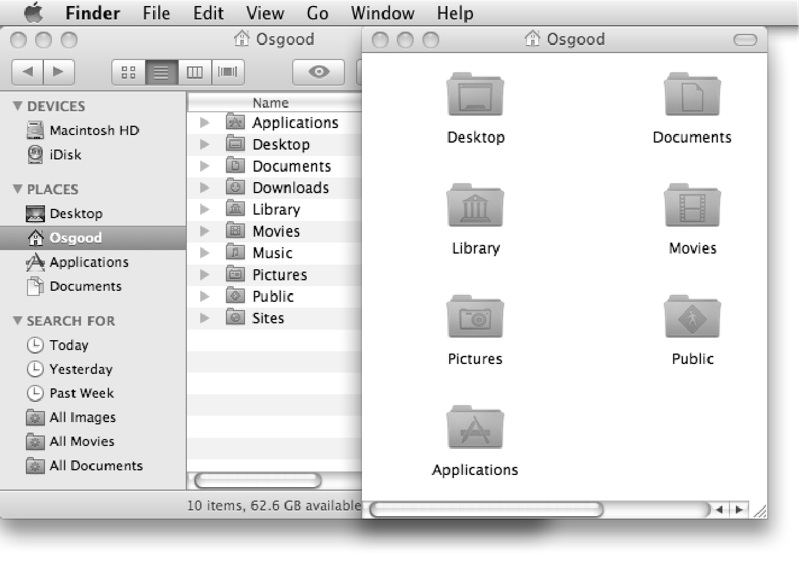

The Position Property
The value of the position property indicates where a Finder window is placed on the desktop. Its value is displayed as a list of two numbers describing the position of the top left corner of the Finder window in relation to the top left corner of the desktop display. The value of the position property can be both read and edited.
Delete the previous script from the script window, then enter, compile, and run the following script:
 A script to extract the position of the front Finder window.
A script to extract the position of the front Finder window.
tell application "Finder" to get the position of the front Finder window
--> returns a list of two numbers, similar to: {97, 364}
The result of the script is a list of two numbers describing the window’s position relative to the top left point of the desktop display.
In AppleScript, lists are enclosed in curly braces with each list item separated by a comma. Lists begin with the open brace “{” character and end with the close brace “}” character. AppleScript lists can contain any kind of information, such as text strings, numbers, references, or any combination of data types.
In a position list, the first list item is a number describing the horizontal distance in pixels from the left side of the desktop display. The second list item is a number describing the vertical distance in pixels from the top of the desktop display. Together, these two numbers describe the specific point on the screen where the top left of the window begins.
Let’s change the value of the position property of the front Finder window to move the window near the top left of the screen.
Delete the previous script from the script window, then enter, check, and run the following script:

tell application "Finder" to set the position of the front Finder window to {94, 134}
The front Finder window has been moved so that its top-left corner is now 94 pixels from the left side of the Desktop and 134 pixels from the top of the Desktop.
To move the window toward the right side of the Desktop, increase the horizontal offset by adding to the first value in the position list, as shown in this script:

tell application "Finder" to set the position of the front Finder window to {300, 134}
To move the window toward the bottom of the Desktop, increase the vertical offset by adding to the second value in the position list, as shown in this script:

tell application "Finder" to set the position of the front Finder window to {300, 240}
Vertical Offset Exception
Unlike most other scriptable applications that use the distance from the top of the screen to the top of a window to determine its vertical position, the Finder uses the distance from the top of the screen to just below the title bar of the window, thus adding the height of the title bar, an extra 22 pixels, to the measurement. This applies whether the Finder window is displaying its toolbar or not. This exception applies only to the Finder application.
In the figure below, the vertical offset of both Finder windows is 44, which consists of 22 pixels for the height of the Desktop’s menu bar plus 22 pixels for the height of the Finder window’s title bar, for a total vertical offset of 44 pixels. As shown, the tops of the two windows are located in the same position vertically, immediately below the bottom of the menu bar.
{kind=link}
